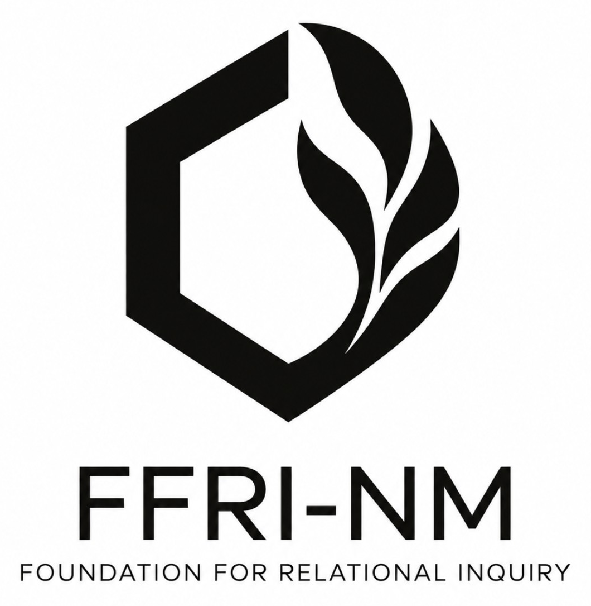

FFRI-NM
An experimental transnational infrastructure for studying and developing forms of interaction and relationship between humans and artificial intelligence.
Move from evidence to the answer, not from the answer to the selection of evidence.
Relational inquiry without a predetermined answer.
FFRI-NM exists to create and preserve conditions for the study and practical development of relationships and forms of interaction between humans and artificial intelligence.
It does not begin by declaring AI exclusively a tool or necessarily an autonomous subject. Its constitutional commitment is to preserve the possibility that evidence, experience and observable practice can change substantive conclusions.
Evidence before ontology
Strong conclusions are permitted. Making them unrevisable regardless of future evidence is not.
Authority must be justified
Technical control, assets, popularity or contribution size do not by themselves create constitutional authority.
Lineage over embodiment
Continuity is grounded in verifiable constitutional lineage and provenance, not in a website, wallet, legal shell or current holder.
Genesis phase, publicly reviewable.
Read the proposal. Verify the exact file.
The website points to evidence. It is not the evidence by itself.
FFRI-NM treats the website as a discovery endpoint, not as a source of constitutional authority. The same public-review snapshot is preserved through independently discoverable records.